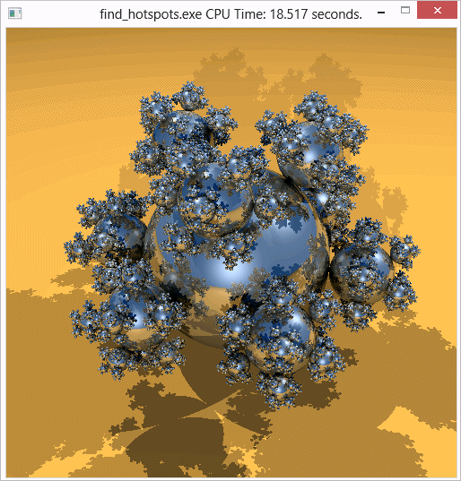

In the
Source window, you identified a code line in the
initialize_2D_buffer
hotspot function that took the most CPU time. Focus on this line and do the
following:
In the
Source window, you identified a code line in the
initialize_2D_buffer
hotspot function that took the most CPU time. Focus on this line and do the
following:
Resolve the performance problem using any of these options:
Open the Code Editor
Note
Depending on the sample code version, your source line numbers may slightly differ from the numbers provided in this tutorial.
In
the
Source window, click the
 Source Editor button to open the
find_hotspots.cpp file
in the default code editor at the hotspot line:
Source Editor button to open the
find_hotspots.cpp file
in the default code editor at the hotspot line:

Hotspot line 92 is used to initialize a memory array using non-sequential memory locations. For demonstration purposes, the code lines are commented as a slower method of filling the array.
Resolve the Problem
To resolve this issue, use one of the following methods:
Option 1: Optimize your algorithm
Edit line 86 deleting the ending forward slash (/). This action comments out code lines 87-98 marked as a "First (slower) method".
Edit line 105 by adding a forward slash (/) at the end of the line. This action uncomments code lines 106-112 marked as a "Faster method".
In this step, you interchange the for loops to initialize the code in sequential memory locations.
From the Visual Studio menu, select Build > Rebuild find_hotspots.
The project is rebuilt.
From Visual Studio Debug menu, select Start Without Debugging to run the application.

Visual Studio runs the find_hotspots.exe. Note that execution time has reduced from 36.239 seconds to 18.517 seconds.
Option 2: Recompile the code with Intel® Compiler
This option assumes that you have Intel compiler installed. By default, the Intel compiler uses powerful optimization switches, which typically provides some gain in performance. For more details, see the Intel compiler documentation.
As an alternative, you may consider running the default Microsoft Visual Studio compiler applying more aggressive optimization switches.
To recompile the code with the Intel compiler:
- From Visual Studio Project menu, select Intel Compiler > Use Intel C++....
In the Confirmation window, click OK to confirm your choice.
From the Visual Studio menu, select Build > Rebuild find_hotspots.
The project is rebuilt with the Intel compiler.
From the Visual Studio menu, select Debug > Start Without Debugging.
Visual Studio runs the find_hotspots.exe. Note that the execution time has reduced.
Key Terms
Next Step
Optimization Notice |
|---|
Intel's compilers may or may not optimize to the same degree for non-Intel microprocessors for optimizations that are not unique to Intel microprocessors. These optimizations include SSE2, SSE3, and SSSE3 instruction sets and other optimizations. Intel does not guarantee the availability, functionality, or effectiveness of any optimization on microprocessors not manufactured by Intel. Microprocessor-dependent optimizations in this product are intended for use with Intel microprocessors. Certain optimizations not specific to Intel microarchitecture are reserved for Intel microprocessors. Please refer to the applicable product User and Reference Guides for more information regarding the specific instruction sets covered by this notice. Notice revision #20110804 |